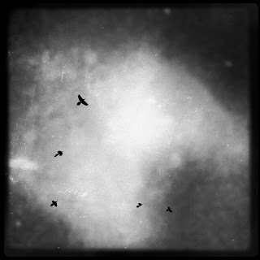

Recovered weblog entry
Shadows in Flight

A bit dark outside for the lens choice. Still fun to zoom in and see the different stages of flight. Yep. The title is a shout out to my favorite author. Live long, Scott Card. Lens: John S
Film: Rock BW-11